Welcome to our website! This website is a part of our final project in the course Social Graphs and Interactions at DTU. The story of Harry Potter, his friends and adventures are one of the most popular book series of our generation. Our aim is to gain a deeper understanding and insights into the Harry Potter universe so that we (and you!) are better prepared for our christmas binging of Harry Potter this year.
Network Analysis
The goal for this part is to analyse the network that was created and look into the relationships between the characters in the Harry Potter world. The data was collected from The Harry Potter Wiki API. From the Wiki page, we managed to collect the names of the characters attending Hogwarts by looking at the pages of the four houses (Gryffindor, Slytherin, Ravenclaw and Hufflepuff). But not all the characters of the Harry Potter world are wizards, so we collected the names of the remaining characters from this API. The names were captured using regular expressions on the text from the HTTP response.
After capturing the names of the characters, along with their wiki pages and entities such as blood type and gender, we built a network based on them. Here we will look at the size of the giant connected component (GCC), its degree distribution, find the most connected characters, look at which house has the most characters, examine the gender distribution of each house, draw the network and finally see if the Friendship Paradox holds for the network.
Harry Potter extended network analysis

Red - Gryffindor
Green - Slytherin
Blue - Ravenclaw
Yellow - Hufflepuff
Beige - Characters without houses
The network is quite big, so it is very dense at some places. The biggest node is, unsurprisingly, Harry Potter. The nodes with names are all well-known characters from the Harry Potter universe. Red and green are dominant colors here which is expected too, because Gryffindor and Slytherin were the houses with the highest number of characters, as shown earlier.
Distribution
Let’s now take a look at the degree distributions of the network. We will look at plots visualising the in- and out-degree distribution, along with the distribution on a log-log scale and the degree distribution of the undirected giant connected component.


As expected, the vast majority of the nodes has a degree close to 0, while very few nodes have a high degree. The x-axis is cut off at 60, for better visualisation, although some nodes have a lot higher degree.
Sentiment of communities and characters
General House Information
 It is not surprising that Gryffindor has the most characters, followed by Slytherin, as those are the main houses in the books. Ravenclaw and Hufflepuff play a smaller role in the series, and have almost the same number of characters. Then there are some characters that are not members of any houses. Those are the characters that were not attending the Hogwarts school, or characters attending Hogwarts, but whose house is unknown.
It is not surprising that Gryffindor has the most characters, followed by Slytherin, as those are the main houses in the books. Ravenclaw and Hufflepuff play a smaller role in the series, and have almost the same number of characters. Then there are some characters that are not members of any houses. Those are the characters that were not attending the Hogwarts school, or characters attending Hogwarts, but whose house is unknown.

The gender distribution is quite even for all of the houses, except for Slytherin which is quite male-dominant. For characters without a house, the males are dominant characters, that might be because many of those characters are trolls and other creatures.
The one house that stands out here is Slytherin. When digging deeper, this is no surprise. On the website Pottermore, J.K. Rowling wrote:
“The term ‘pure-blood’ refers to a family or individual without Muggle (non-magic) blood. The concept is generally associated with Salazar Slytherin, one of the four founders of Hogwarts School of Witchcraft and Wizardry, whose aversion to teaching anybody of Muggle parentage eventually led to a breach with his three fellow founders, and his resignation from the school.”
This shows that Slytherin has much pride in keeping their purity. The diminshing number of pure-bloods over the years led to inbreeding within the families that wanted to keep the purity in the family. The Malfoy family was one of those who wanted to stick to that, but eventually allowed marrying half-bloods.
House Comparison
The following section will carry out a thorough comparison of the network structures, most frequent words, communities, and sentiment analysis of each of the houses in the Harry Potter stories and group all characters without a house in one graph. All houses will contain the following sections:
Network analysis: Covering the basic structure of the graph for each house and the degree distribution of characters.
Wordcloud: Wordcloud for each house. The word clouds show the words with the most weight based on their TC-IDF(Term Count - Inverse Document Frequency) value. The text for each house is gathered from their characters' pages. The TC is the count of each unique word within the house text while the IDF is a weight indicating how commonly a word is used in the entire character pages, that is in all house texts. The more frequent its usage across documents, the lower its score. The lower the score, the less important the word becomes. This should leave words that are descriptive of the house in consideration, leaving out words that frequently occur in all character pages like curse, dark, magic, etc.
The sentiment of communities and characters: Displays the distribution of sentiment over character pages within the house. Then detects communities within the network and calculates their average sentiment. Finally, for the communities, the words with the most weight based on their TF-IDF(Term Frequency - Inverse Document Frequency) values were detected to see if they reflect on the average sentiment of the communities. All sentiment analysis was carried out using the method based VADER sentiment analysis.
Gryffindor
Gryffindor is without a doubt the house that gets the most attention throughout the series. The reason for that is because three of the main characters, Harry, Ron, and Hermione, are all sorted into Gryffindor house and therefore it can be argued that the series is a bit biased towards Gryffindor. The main characteristics that people from Gryffindor are known for are courage, chivalry, and loyalty. Even though the emphasis is mostly on their positive traits they are far from being perfect.
Network analysis
Distribution


Wordcloud
Gryffindor holds many of the main characters that are stereotyped as daring, brave, and warm felt personalities, the word cloud manages to emphasize some of the describing words and keywords/names in the storyline.
1. Scabbers and Crookshanks: Two of the major housepets within the house; Scabbers is Ron’s rat and Crookshanks is Hermonies cat.
2. Signup and Sheet: Refers to the signup sheet for Dumbledore’s Army, everyone that wanted to join his side needed to sign the sheet. This indicates that a major of Gryffindor characters were loyal to Dumbledore’s Army.
3. Grawp: A giant and half-brother of Hagrid, he was frequently picked on by other giants for his short height. He correlated with Gryffindor, he has a major role in The Order of the Phoenix and takes place in the battle of Hogwarts as a part of Dumbledore’s Army.
4. Cursebreaker: Occupational title used by witches and wizards who removed, countered, or broke curses placed on objects or places for a living. Indicating that a part of Gryffindor graduates worked as curse breakers.
5. Locket: One of the Horcruxes eight Lord Voldemort split his soule into. For him to be killed eternally all eight needed to be destroyed first.
6. Shrieking shack: Abandoned house in Hogsmeade. For many years, villagers thought it was haunted because they often heard screams coming from inside, and Albus Dumbledore encouraged the rumor, as he was the one who commissioned it to Remus Lupin so that he would have a place for his monthly transformations into a werewolf. Harry Potter and Hermione Granger were led into the shack when Sirius Black, as a dog, dragged Ron off into the underground passage, located underneath the Whomping Willow. While inside the shack Harry then found out who had betrayed his parents and Scabbers' true identity was revealed. The Shrieking Shack was later used by Lord Voldemort and several of his Death Eaters in 1998 as a hideout during the Battle of Hogwarts. Severus Snape was killed by Nagini in this very building
7. Bulletin: Refers to the Harry Potter video games, if you get to play major Gryffindor characters: Harry, Ron, or Hermione you receive a sidequest on the bulletin board.
Overall the word cloud manages to sum both occupations and major story occurrences rather than personality properties of Gryffindor characters.
Sentiment of communities and characters
Results: The distirbution of character sentiments along with average sentiment of communities detected diplay Griffendor as a quite neutral house. Gryffindor contains over 250 characters where most reflect in the house values while the main characters have an overall negative page. It’s hard to conlude that this matches or doesn’t match the stereotype og Fryffindor sinve the results are rather neutral.
The tables show the top words based on their TF-IDF values, for the happiest and saddest communities based on the VADER sentiment analysis.
Minerva McGonagall - Sirius Black - Lily J. Potter
| Word | TF-IDF Score |
|---|---|
| Jacob | 6.76 |
| Coltrane | 6.30 |
| Hogwarts | 6.01 |
| Invention | 5.93 |
| Year | 5.78 |
Ronald Weasley - Hermione Granger - Albus Dumbledore
| Word | TF-IDF score |
|---|---|
| Erling | 6.76 |
| Cadogan | 6.46 |
| Sir | 5.72 |
| Fat | 5.24 |
| Pony | 5.24 |
Slytherin
Slytherin is the house that gets the worst reputation throughout the entire series. While there is significantly more emphasis on Slyther’ins bad characteristics they have some very desirable characteristics as well. The selection hat tended to select people who had characteristics such as cunning, ambitions, leadership abilities and esourcefulness. Slytherin is often associated with dark magic and the characters are often seen as devious, selfish and cruel even though that is definitely not the case for all of them.
Network analysis

Distribution

Wordcloud

Slytherin is thought of as the evil characters of the stories that think higher of themselves than characters of other houses due to their high proportion of pure-blood wizards within the house.
1. Kreacher: Voldemorts house elf.
2. Purity and Inbreeding: Referring to the high proportion of pure-blood wizards within Slytherin.
3. Manor: Manor was the home of the wealthy pure-blood Malfoy family, located in Wiltshire, England. It was mainly used as the base of operations for Lord Voldemort and the Death Eaters during the Second Wizarding War.
4. Densaugeo: Hex which causes the teeth to elongate at a grotesque, alarming rate. Used early on in the stories by Slytherin students.
5. Disowned: Indicating that several Slytherin characters have been disowned by their parents.
5. Locket: One of the Horcruxes eight Lord Voldemort split his soules into. For him to be killed eternally all eight needed to be destroyed first.
6. Shrieking shack: Abandoned house in Hogsmeade. For many years, villagers thought it was haunted because they often heard screams coming from inside, and Albus Dumbledore encouraged the rumor, as he was the one who commissioned it to Remus Lupin so that he would have a place for his monthly transformations into a werewolf. Harry Potter and Hermione Granger were led into the shack when Sirius Black, as a dog, dragged Ron off into the underground passage, located underneath the Whomping Willow While inside the shack Harry then found out who had betrayed his parents and Scabbers' true identity was revealed. The Shrieking Shack was later used by Lord Voldemort and several of his Death Eaters in 1998 as a hideout during the Battle of Hogwarts. Severus Snape was killed by Nagini in this very building.
Overall the word cloud manages to sum up the identities of Slytherin along with important objects of the storyline.
Sentiment of communities and characters
 Results: The character sentiment distribution on average following something close to a normal distribution leaning towads the negative end with most characters from -0.05–1.05. The communities detectected obtain a negative average sentiment value. This doesn’t reflects the wordcloud drawn for the house where there was frequent occuring of negative words. Overall this accepts te stereotype of Slytherins: Ambition, resourcefulness and determination. An association with villainous characters and elitism has given Slytherin the reputation of being an evil house. Resulting in an overall negative stereotype.
Results: The character sentiment distribution on average following something close to a normal distribution leaning towads the negative end with most characters from -0.05–1.05. The communities detectected obtain a negative average sentiment value. This doesn’t reflects the wordcloud drawn for the house where there was frequent occuring of negative words. Overall this accepts te stereotype of Slytherins: Ambition, resourcefulness and determination. An association with villainous characters and elitism has given Slytherin the reputation of being an evil house. Resulting in an overall negative stereotype.
The tables show the top words based on their TF-IDF values, for the happiest and saddest communities based on the VADER sentiment analysis.
Stuart Craggy - Steve Laughalot - Emma Vanity
| Word | TF-IDF score |
|---|---|
| Draughtsman | 3.06 |
| Captain | 3.03 |
| Quidditch | 2.89 |
| Hogwarts | 2.56 |
| Name | 2.30 |
Severus Snape - Lord Voldemort - Bellatrix Lestrange
| Word | TF-IDF score |
|---|---|
| Rowan | 9.30 |
| Vault | 8.73 |
| Jacob | 7.68 |
| Sibling | 6.36 |
| Choir | 5.81 |
Hufflepuff
Hufflepuff is known to be the most inclusive house of the four. Students who were chosen to this house were known to be hard-working, loyal, and honest as well as taking everybody as an equal. What is very interesting about Hufflepuff house is that the fewest dark vizards belonged to that house.
Network analysis

Distribution

Wordcloud
JK. Rowling wrote the stories with Gryffindor characters as main characters and used Slytherin characters as opposed to the main characters, overall Slytherin represents the bad guys. That makes the characters of Hufflepuff and Ravenclaw side characters to the story and they have significantly less weight in the stories. Hufflepuff was left out a lot in the stories so when JK. Rowling started working on Fantastic Beasts, which is a side story to Harry Potter, she emphasized the Hufflepuff house to make their role bigger in the joint stories. This makes up for most of the big words in their word cloud. We didn’t grasp characters from the fantastic beast stories unless they appeared in the harry potter stories so that’s why you can see some of the main character names from there.
1. Tina, Kowalski, Queenie, and Creedence: The main characters from the Fantastic Beasts movies.
2. Suitcase: Refers to the suitcase that Newt stored is magical creatures in.
3. Obsucurus: An Obscurus was the manifestation of the repressed energy of a young wizard or witch. Described as a “dark” and “parasitic” force, an Obscurus was created when the wizard child in question consciously attempted to repress their magical abilities or were forced to do so through physical or psychological abuse. Creedence in the fantastic beasts was an Obscurus.
4. MACUSA: Stands for The Magical Congress of the United States of America, they were involved a lot in the storyline of the Fantastic Beasts.
5. Greenhouse: This is one of few that refer to the Harry Potter stories. It refers to the only teacher who was a known Hufflepuff; Madam Sprout who taught Herbology in the greenhouses.
These words confirm the minor role Hufflepuff had in the Harry Potter stories and clearly state the major role JK. Rowling gave them in the Fantastic Beasts. This is assumption is supported by the fact that the place where the only Hufflepuff teacher teaches its course. The only Hufflepuff character that played a big role in the stories was Cedric Diggory who was killed in the same story as he was introduced.
Character based sentiment analysis
Results: The character sentiment distribution on average is leaning towads the positive end with most characters from 0-05. The communities detectected obtain a neutral-positive average sentiment value. This can be connected to the stereotype set for Hufflepuff: a strong sense of justice, loyalty and patience.
The tables show the top words based on their TF-IDF values, for the happiest and saddest communities based on the VADER sentiment analysis.
Pomona Sprout - Gabriel Truman - Helga Hufflepuff
| Word | TF-IDF score |
|---|---|
| Theorem | 4.96 |
| Arithmancy | 4.64 |
| Herbology | 4.58 |
| Hogwarts | 4.34 |
| Snare | 4.28 |
Cedric Diggory - Heidi Macavoy - Tamsin Applebee
| Word | TF-IDF score |
|---|---|
| Maze | 5.24 |
| Captained | 4.64 |
| Egg | 4.64 |
| Echo | 4.28 |
| Seeker | 3.84 |
Ravenclaw
Students who were chosen into Ravenclaw house were known for their wisdom, intelligence, and willingness to learn. With that being said many of Ravenclaw members were very ambitious and talented students. There were rumors from Slytherin house that Ravenclaw students weren‘t as perfect as they seemed since they would without blinking an eye backstab each other, and students from other houses, in order to get higher grades.
Network analysis

Distribution
Wordcloud

Ravenclaw, like Hufflepuff is a minor of the story but still has significantly more weight than Hufflepuff. The word cloud overall seems to be centered around Gilderoy Lockhart who is the biggest active character of Ravenclaw along with Luna Lovegood. Words that refer straight to his presence in Ravenclaw are:
1. Fraudulence, Fraudulent, and Fraud: Gilderoy Lockhart was an immoderately vainglorious, self-obsessed, egocentric, and narcissistic self-promoter who claimed to have accomplished multiple heroic deeds. However, in reality, he was nothing but a charlatan who took credit for other wizards and witches' achievements. So in general he was very fraudulent.
2. Shampoo: Referring to the shampoo, made from Occamy egg yolks, that was a potion invented by Gilderoy Lockhart that supposedly guaranteed “locks of lustrous luminosity and great hair, but in reality was a fraud.
3. Branagh: Gilderoy Lockhart was played by Kenneth Branagh.
4. Peacock: Description to Gilderoy, it means that he is arrogant or likes dressing or behaving in a way that draws attention to himself.
Other noticeable words in the Ravenclaw word cloud:
1. Vampire: Quirell was a villain in The Philosophers’s Stone stories. He came across as scittish and weird since he was possessed by Lord Voldemort which wasn’t a known fact. The rumor was that he had been in a vampire attack.
2. Baron: Refers to the Bloody Baron which is the Slytherin’s house ghost so maybe he should rather be in their word cloud. BUT The Bloody Baron was in love with The Gray Lady, Ravenclaws house ghost(she is the ghost of Helena Ravenclaw, the daughter of Rowena Ravenclaw who founded the house). When she denied his love he killed her. His part in Ravenclaws story is the consequence of this action.
Very IMPORTANT side note: The fact that the Bloody Baron killed Helena Ravenclaw isn’t public knowledge in the story. Helena tells Harry and Luna Lovegood this in The Deathly Hallows book but in-universe this isn’t a known fact. This fact shows that the word clouds can reflect meta-knowledge and connections of the stories. This can explain some words that we might think are random in the context of some houses.
Sentiment of communities and characters
 Results: The character sentiment distribution on average is nearly equally distributed leaning towads the positive end with most characters from 0.05-1.05. The communities detectected obtain a positive average sentiment value. This doesn’t reflect the wordcloud drawn for the house where Fraud and other negative words where the biggest ones. This proves our theory that theese negative words were descriptive of Ravenclaws main character Gildeory Lockhart but not the house itself.
Results: The character sentiment distribution on average is nearly equally distributed leaning towads the positive end with most characters from 0.05-1.05. The communities detectected obtain a positive average sentiment value. This doesn’t reflect the wordcloud drawn for the house where Fraud and other negative words where the biggest ones. This proves our theory that theese negative words were descriptive of Ravenclaws main character Gildeory Lockhart but not the house itself.
The tables show the top words based on their TF-IDF values, for the happiest and saddest communities based on the VADER sentiment analysis.
Filius Flitwick - Rowena Ravenclaw - Ravenclaw Wizard Duelling Champion
| Word | TF-IDF score |
|---|---|
| Army | 5.70 |
| Fought | 5.21 |
| Dating | 5.00 |
| Kiss | 5.00 |
| Coin | 5.00 |
Luna Lovegood - Xenophilius Lovegood - Marietta Edgecombe
| Word | TF-IDF score |
|---|---|
| Vanity | 8.50 |
| Turban | 7.74 |
| Annoying | 7.56 |
| Branagh | 7.56 |
| Fame | 7.21 |
Characters without houses
Not all the characters in the Harry Potter world are wizards or witches. Many of them are just ordinary muggles that live their lives outside the walls of the Hogwarts School of Witchcraft and Wizardry. Since those characters are quite many, and some of them major characters in the storyline, it was decided to collect them and create a separate network and do analysis on them. Some of those characters are actually wizards or witches, but their house is unknown.
Network analysis

Distribution

Wordcloud
It’s a surprise that the word cloud generated for characters without a house has some context.
1. Smelting: Refers to the school that the Dursleys anticipated sending Harry Potter to before Hagrid fetched him to Hogwarts. This shows a correlation to the character pages of the Dursley characters, Harry’s mother’s family who took care of him after his parents were killed by Voldemort.
2. Colony: Refers to the Giant and the Forbidden Forest centaur colony indicating that a part of the characters without a house come from either of these colonies.
3. Kwikspell: Kwikspell is a correspondence course in beginner’s magic run by the Kwikspell Company. The course is designed to help adult witches and wizards brush up on their magical skills. This indicates that a lot of the characters without a house are people with magical abilities that haven’t practiced magic.
4. Privet: The street that the Dursley family lives in.
This word cloud also holds some characters that we weren’t able to grasp such as Kreacher the house-elf, Madame who is Hagrids girlfriend a half-giant from France, Barty a young wizard who became loyal to Voldemort early on, and Stan the conductor and helper of the Knight Bus as well as an intended death eater. They seem to have a lot of mentiones within characters without a house.
Sentiment of communities and characters
Results: The character sentiment distribution follow a normal distribution centering right below the neutral value 0.0 with most characters at 0.2 and 0 meaning that the average is leaning towads the negative end. The communities detectected obtain a rather negative average sentiment value.
The tables show the top words based on their TF-IDF values, for the happiest and saddest communities based on the VADER sentiment analysis.
Moran - Troy - Connolly
| Word | TF-IDF score |
|---|---|
| Advance | 8.03 |
| Minister | 5.64 |
| Gabrielle | 5.51 |
| Guard | 5.18 |
| Privet | 4.98 |
Alastor Moody - Marlene McKinnon - Igor Karkaroff
| Word | TF-IDF score |
|---|---|
| Madeye | 7.37 |
| Rowle | 7.10 |
| Thorfinn | 6.40 |
| Ariana | 6.30 |
| Azkaban | 5.63 |
Conclusion to sentiment analysis and community dections within houses
Sentiment Comparison
This section will cover sentiment analysis of the Harry Potter books and movies along with a comparison of the two. The sentiment was calculated per page and averaged per chapter in the books but calculated per scene for the movies. The sentiment is calculated using the method-based VADER sentiment analysis, the reasoning is the same as for the section above. The overall interest here correlation of the storylines in the books vs. the movies based on sentiment and the storyline tracking of each story. Due to the high number of scenes per movie, the story tracking was based on the book sentiment analysis. This makes visualization more accessible for the end user.
Result: At first sight, the sentiment seems to be somehow correlated with an exception for The Goblet of Fire. This significant difference is since the book closely emphasizes the anger and disappointment Dumbledore expresses when Harry is chosen one to participate in the Triwizard Tournament. The movie captures the whole tournament as an exciting event with a lot of festive gatherings while the sent of it is a bit more serious in the books. In Genral it was expected to see some differance in the sentiment since the books are up to 1000 pages and a lot of content that might not affect the story that much is cut out for the movies.
The VADER score scale ranges from -1 to 1 where -1 is the most negative and 1 is the happiest. The movie sentiments manage to cover close to 50% of the scale while the books stay more consistent in sentiment and cover just around 30% of the entire scale. The Harry Potter stories use a lot of really dark words and many scenes take place in unhappy and scary places but on the other hand, there are a lot of truly magical scenes that result in a happy sentiment, such as the Christmas scenes, festive events and final scenes of each movie. These differences result in a rather balanced average sentiment.
Overall we can say that with an exception of The Goblet of Fire story that the sentiment for the entire storyline in the books and movies is rather correlated. The first movie The Philosopher’s Stone seems to be the happiest story considering both sentiments of the book and movies. It clearly describes the magical environment present in the story and the positive experience of Hogwarts. The saddest story is noticeably The Deathly Hallows which was expected due to the horrific storyline and events of the story.
Result: Looking at the individual stories we can see that there is a clear trend of all stories. They start of happy developing into a wide-ranging storyline that reaches a tragic sad point near the end but always results in a happy ending. This is reflected in the development of sentiment scores throughout the stories. After some research, we figured out that the happiest scenes just after the middle of each story are for the Christmas scenes.
Analyzing the curve it is interesting to mention which event causes the most dramatic curve drop in each story:
The Philosopher’s Stone: Harry discovers the existence of Voldemort and the story behind his scar.
The Chamber of Secret’s: No drastic drops to mention, this story describes Harry’s wellbeing as a wizard and his discoveries of magical abilities. The biggest accomplishment is killing the great Basilisk snake, a snake bred with Salazar Slytherin’s intent to murder Muggle-borns
The Prisoner of Azkaban: Near the end, Sirius Black vanishes which causes enormous grief for Harry since he knows his parents and he wanted to establish a closer connection with him.
The Goblet of Fire: There are various drops here describing the dark scenes of the Triwizard Tournament. The biggest drop near the end reflects on the return of Voldemort and his murder of Cedric Diggory in the Maze challenge.
The Order of the Pheonix: The darkest story except for The Deathly Hallows since Voldemort has returned but everyone is in denial. there are increased dark scenes due to his return. Voldemort has started gathering his army again, and a lot of his previous allies are introduced to the story for example Bellatrix Lestrange once she escapes Azkaban. The biggest drops toward the end represent the murder of Sirius Balck committed by Bellatrix Lestrange. Dark matters are all over in this movie indicating the war upon all wizards.
The Half-Blood Prince: The biggest drop represents the killing of Dumbledore in the Astronomy Tower.
The Deathly Hallows: The entire storyline is variating in sentiment scores but overall there are a lot of horrific events in this story. The big drops near the end indicate the killing of Severus Snape and the War of Hogwarts.
Even though Christmas scenes and Sorting Hat + Festive Dinners gain a happy sentiment score it is also noticeable that the final scene of The Deathly Hallows that winds into the future for the main characters is extremely happy in sentiment.
Explainer Notebook
Linka Explainer Notebook hér